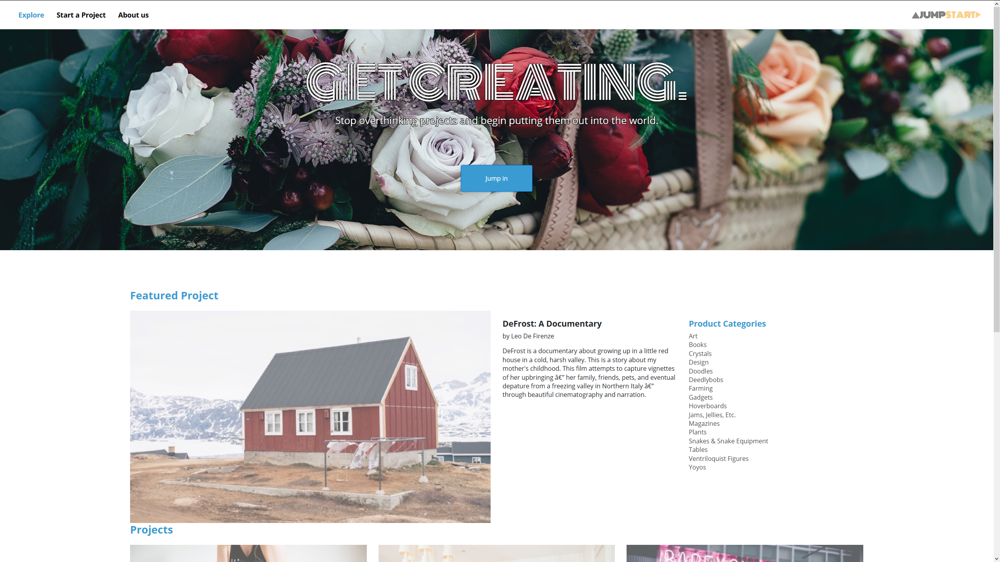
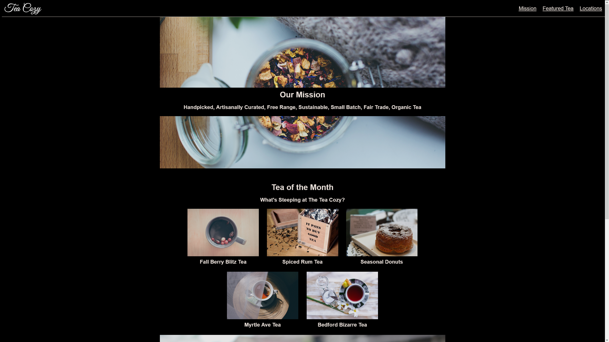
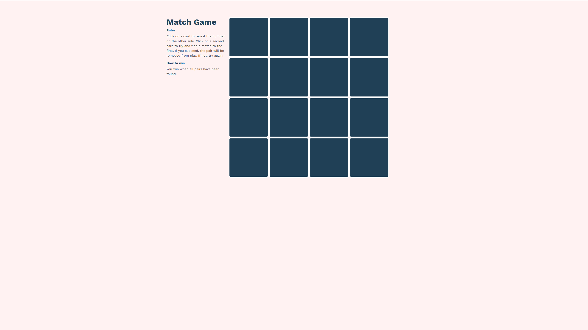
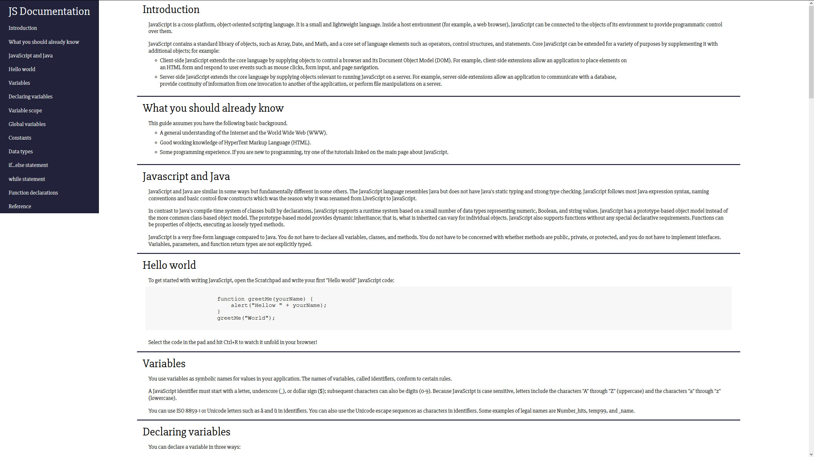

Joe Noble
Web Development
Information Technology
Jumpstart
This site showcases jQuery and Slick functionality, with an automatic carousel of images with unique titles cycling at the top of the site. A clean layout lets the images in the content area stand out with an interactive hover effect. This site provided me with practice with not just different APIs but also with image sizing and interactions.
Codecademy Intensive
Tea Cozy
The Tea Cozy site provides a layout of product offerings, designed using Flexbox functionality. This was the first major site I made using Flexbox.
CodeCademy Intensive
Match Game
The Match Game site was made with a focus on slightly more advanced JavaScript coding. The game is a basic matching game that checks if two cards that have been flipped match. If so they remain flipped, otherwise they become hidden again. Once the user flips all of the cards, a winning banner and button to restart the game appear. There is no responsive functionality, but it was a good experience of me to learn how Javascript/J-Query interacted with the DOM.
CodeCademy Intensive
Documentation Page
This site is a single page of Javascript documentation, sourced from the Mozilla Developer Network (MDN). While it doesn't have much in the way of interesting functionality or interaction, it provided me with experience making a site with many repetitive sections that needed to look uniform throughout.
FreeCodeCamp Project